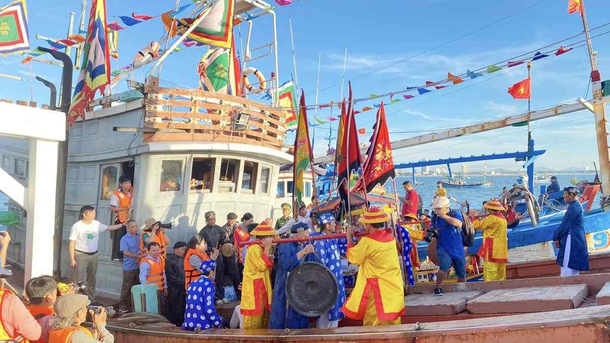
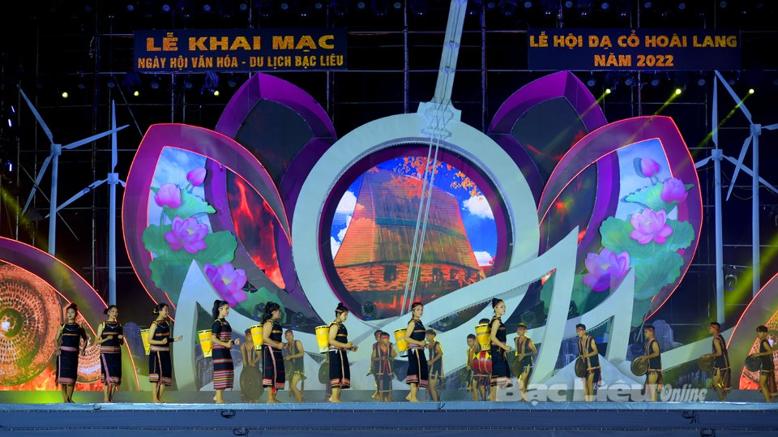
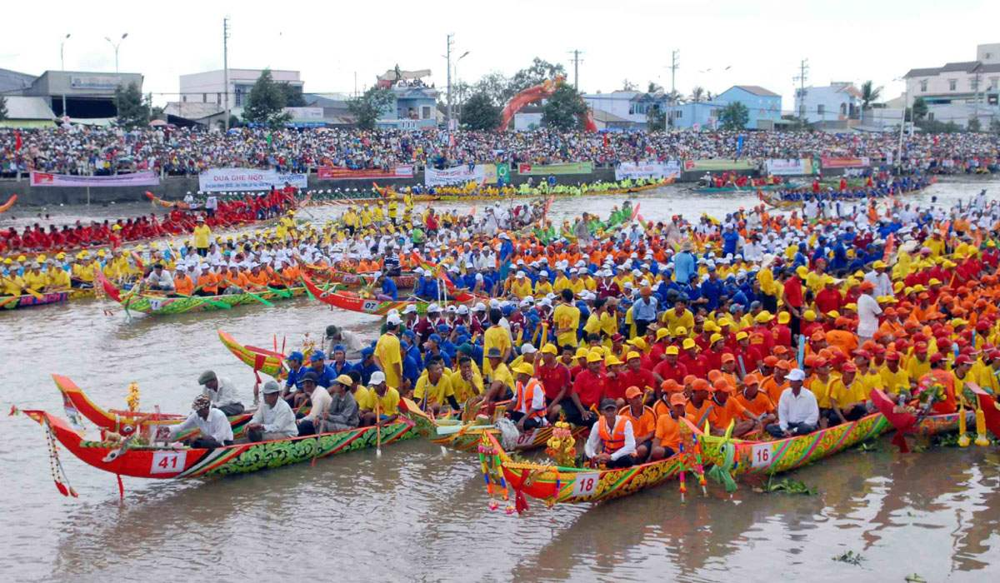
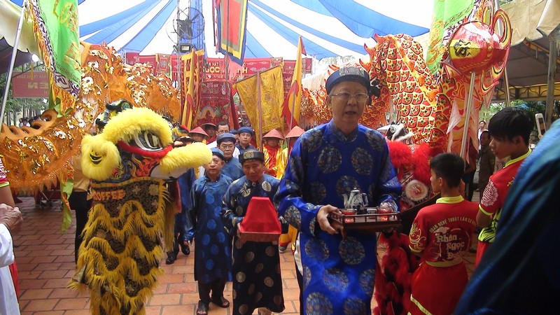

Nét đẹp văn hóa truyền thống miền Tây Nam Bộ
Lễ hội ở Bạc Liêu mang đậm bản sắc văn hóa dân gian của cộng đồng các dân tộc Kinh, Hoa và Khmer. Các lễ hội không chỉ thể hiện đời sống tín ngưỡng, tinh thần mà còn phản ánh nét sinh hoạt văn hóa đặc trưng của vùng đất giàu truyền thống lịch sử và nhân văn.

Lễ hội Nghinh Ông là một trong những lễ hội dân gian tiêu biểu của tỉnh Bạc Liêu, gắn liền với đời sống văn hóa tín ngưỡng của cư dân ven biển. Lễ hội thể hiện niềm tin và lòng tôn kính của ngư dân đối với Ông Nam Hải (cá voi) – vị thần được xem là linh vật che chở cho người đi biển, mang lại bình an, mưa thuận gió hòa và mùa đánh bắt bội thu. Lễ hội thường được tổ chức hằng năm tại các vùng ven biển của Bạc Liêu, với phần lễ trang nghiêm và phần hội sôi nổi. Nghi thức chính là lễ rước và nghinh Ông trên biển, trong đó các đoàn tàu được trang hoàng cờ hoa, xuất bến trong không khí thành kính để thực hiện nghi lễ cầu an. Bên cạnh đó là các hoạt động cúng tế truyền thống, thể hiện đạo lý “uống nước nhớ nguồn” và tinh thần đoàn kết của cộng đồng ngư dân. Không chỉ mang ý nghĩa tâm linh, Lễ hội Nghinh Ông còn là dịp sinh hoạt văn hóa cộng đồng, với nhiều hoạt động văn nghệ, trò chơi dân gian và giao lưu văn hóa đặc trưng vùng biển. Qua thời gian, lễ hội đã trở thành một nét đẹp văn hóa truyền thống của Bạc Liêu, góp phần bảo tồn giá trị tín ngưỡng dân gian và làm phong phú đời sống tinh thần của người dân địa phương.

Lễ hội Dạ cổ hoài lang là một sự kiện văn hóa tiêu biểu của tỉnh Bạc Liêu, được tổ chức nhằm tôn vinh giá trị nghệ thuật của bài “Dạ cổ hoài lang” – tác phẩm do nhạc sĩ Cao Văn Lầu sáng tác, đặt nền móng cho sự hình thành và phát triển của nghệ thuật Đờn ca tài tử Nam Bộ và cải lương Việt Nam. Lễ hội không chỉ mang ý nghĩa tưởng nhớ công lao của tác giả mà còn khẳng định vị thế của Bạc Liêu như cái nôi của một dòng chảy âm nhạc truyền thống đặc sắc. Lễ hội thường được tổ chức định kỳ với nhiều hoạt động văn hóa – nghệ thuật phong phú như biểu diễn đờn ca tài tử, cải lương, hội thi, hội diễn và các chương trình giao lưu nghệ thuật. Các hoạt động này góp phần tái hiện không gian văn hóa Nam Bộ, lan tỏa giá trị thẩm mỹ, tư tưởng và tinh thần nhân văn sâu sắc của bài Dạ cổ hoài lang trong đời sống đương đại. Không chỉ mang ý nghĩa nghệ thuật, Lễ hội Dạ cổ hoài lang còn là dịp sinh hoạt văn hóa cộng đồng, góp phần bảo tồn và phát huy di sản văn hóa phi vật thể của dân tộc. Thông qua lễ hội, các giá trị truyền thống được truyền lại cho thế hệ trẻ, đồng thời quảng bá hình ảnh văn hóa đặc trưng của Bạc Liêu đến với du khách trong và ngoài nước.

Lễ hội Ok Om Bok (còn gọi là Lễ cúng Trăng) là một trong những lễ hội truyền thống quan trọng của đồng bào Khmer Nam Bộ, được tổ chức phổ biến tại tỉnh Bạc Liêu. Lễ hội diễn ra vào rằm tháng 10 âm lịch hằng năm, nhằm bày tỏ lòng biết ơn đối với Mặt Trăng – vị thần được xem là đã che chở, ban phước lành cho mùa màng tươi tốt và cuộc sống no đủ của người dân. Phần lễ của Ok Om Bok được tổ chức trang nghiêm với nghi thức cúng Trăng, trong đó các lễ vật như cốm dẹp, khoai, chuối, dừa và nông sản địa phương được bày biện thể hiện thành quả lao động của một năm. Nghi thức này phản ánh tín ngưỡng nông nghiệp lâu đời và mối quan hệ hài hòa giữa con người với thiên nhiên trong đời sống văn hóa của đồng bào Khmer. Bên cạnh phần lễ, phần hội diễn ra sôi nổi với nhiều hoạt động văn hóa – thể thao truyền thống như múa hát dân gian, trò chơi cộng đồng và đặc biệt là đua ghe ngo, thu hút đông đảo người dân và du khách tham gia. Thông qua Lễ hội Ok Om Bok, các giá trị văn hóa truyền thống của đồng bào Khmer được bảo tồn và phát huy, góp phần làm phong phú thêm bức tranh văn hóa đa dân tộc của tỉnh Bạc Liêu.

Lễ hội dân gian ở Bạc Liêu là bộ phận quan trọng trong đời sống văn hóa tinh thần của cộng đồng cư dân địa phương, phản ánh quá trình hình thành, phát triển và giao thoa văn hóa giữa các dân tộc Kinh, Khmer và Hoa. Các lễ hội dân gian gắn liền với tín ngưỡng dân gian, sản xuất nông nghiệp, đời sống sông nước và sinh hoạt cộng đồng, thể hiện rõ nét bản sắc văn hóa vùng Nam Bộ. Những lễ hội này thường kết hợp hài hòa giữa phần lễ mang tính nghi thức, tâm linh và phần hội mang tính vui chơi, giải trí cộng đồng. Thông qua các nghi lễ cúng bái, rước lễ và sinh hoạt văn hóa tập thể, người dân bày tỏ lòng biết ơn đối với thần linh, tổ tiên, đồng thời cầu mong cuộc sống bình an, mưa thuận gió hòa và làm ăn phát đạt. Không chỉ mang ý nghĩa tín ngưỡng, lễ hội dân gian còn đóng vai trò quan trọng trong việc gắn kết cộng đồng, bảo tồn các giá trị văn hóa truyền thống và truyền dạy phong tục, tập quán cho các thế hệ sau. Trong bối cảnh hiện nay, các lễ hội dân gian ở Bạc Liêu đang được gìn giữ và phát huy như một nguồn lực văn hóa đặc sắc, góp phần làm phong phú đời sống tinh thần và thúc đẩy phát triển du lịch địa phương.